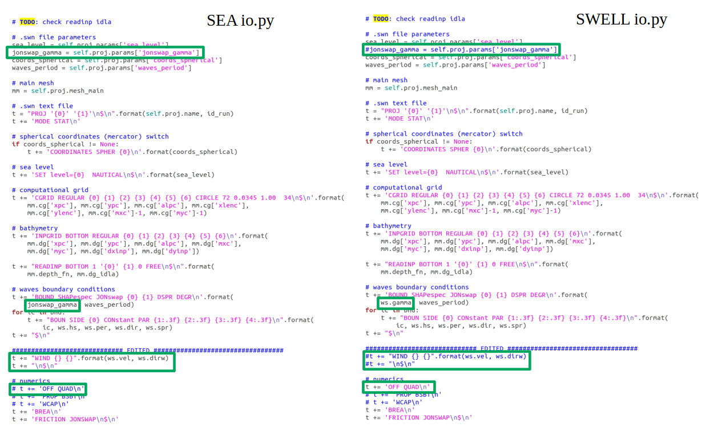
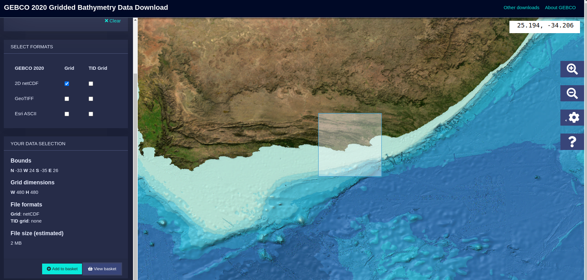

2. Propagation of the selected cases using SWAN¶
The cases are already selected and now, these selected cases must be propagated to shallow water so the wave climate can be reconstructed in the desired coast or more precisely, surfbreak, which is defined in (González Trueba, 2012) as an area in which factors such as the swell from the open sea, currents, sea level and variable depth associated with the tides, the seabed and wind, interact to give rise to the formation of a surfable wave. When considering the operation of a surf break, it is necessary to include the swell corridor, located offshore. Thus, a surf break is that strip of the coastal environment in which the combination of marine hydrodynamics, meteorology and coastal morphology generate waves with a form of break suitable for surfing.
The propagation of the cases is not performed equally for the windeas and the swells, as it was described in the MDA notebook. When the windseas are propagated, wind is taken into account and the parameter \(\gamma\) (named as jonswap_gamma or ws.gamma in the code) takes a constant value of 3. On the other hand, swells are propagated without the effect of the local wind, and its shape parameter \(\gamma\) depends on each individual case. For this purpose, the only thing that must be done so the propagations can run correctly is change the make_input function in the io.py file as it is shown below:

Notice that the io.py file is loaded as a module, so once the seas have been run, the kernel must be restarted, and all the modules must be reloaded again (just follow the notebook and it will be trivial). Run the seas by running all the cells below until the advice cell in blue appears, and then repeat the process for the swells, changing the io.py file first.
A very important fact in this propagation section is the computational effort that is made, and which is translated into time. The software that is used here is proportioned by the Technical Univerity of Delft and is called SWAN (Simulating WAves Nearshore). With SWAN, each individual case is propagated dinamically to each cell or point in the bathymetry grid, resolving phenomenons such as diffraction and refraction. This is very expensive at the computational level, so just a certain number of cases are propagated that will be used later to reconstruct the total historical dataset.
Time wasted running the cases: The time depends on the number of cases that wanna be run and the shape of the bathymetry or region desired, as it is obvious, but as a reference, 100 windseas cases can take a time of about 3 hours while 100 swells can be resolved in 1 hour, a third of the time, all this in a rectangular bathymetry with 200 m resolution (approx).
2.1. Windseas can be run below¶
# common
import sys
import os
import os.path as op
# basic
import numpy as np
import pandas as pd
import xarray as xr
from time import time
# plotting
from matplotlib import pyplot as plt
from mpl_toolkits.basemap import Basemap
# warnings
import warnings
warnings.filterwarnings("ignore")
t0 = time()
# swan wrap module
from lib.wrap import SwanProject, SwanWrap_STAT
# data
num_cases = 300 # number selected in MDA section
p_data = op.abspath(op.join(os.getcwd(), '..', 'data'))
p_hind = op.join(p_data, 'hindcast')
waves = pd.read_pickle(op.join(p_hind, 'sea_cases_'+str(num_cases)+'.pkl'))
waves.rename(columns={'Hsea' : 'hs',
'Tpsea' : 'per',
'Dirsea' : 'dir',
'Sprsea' : 'spr',
'W' : 'vel',
'DirW' : 'dirw'}, inplace=True)
print(waves.info())
<class 'pandas.core.frame.DataFrame'>
RangeIndex: 300 entries, 0 to 299
Data columns (total 6 columns):
# Column Non-Null Count Dtype
--- ------ -------------- -----
0 hs 300 non-null float64
1 per 300 non-null float64
2 dir 300 non-null float64
3 spr 300 non-null float64
4 vel 300 non-null float64
5 dirw 300 non-null float64
dtypes: float64(6)
memory usage: 14.2 KB
None
EDIT SECTION BELOW:
Here, the grid where the bathymetry will be run is selected. Notice that the file used for this bathymetry is not the global file proportioned by GEBCO, but a regional file that can be also downloaded from the application in this website. An example of the aspect of this application in the region selected in this notebook is shown below:

As a recommendation, download a bigger area than the one that wants to be used, as the file size will not be much larger, but it is better to ensure the area you are selecting is valid enough. Once the area is selected, download the file as a netcdf, as it is the one preferred by the community, and it is also used here.
# --------------------------------------------------------------------------- #
# GRID PARAMETERS
# --------------------------------------------------------------------------- #
# ---------------- EDIT ONLY THIS PART ------------------------------------ #
# --------------------------------------------------------------------------- #
name = 'BRM' # please choose a short name (max 3 letters)
# Coordinates section
# Place the coordinates as they are proportioned in Google Maps
ini_lon = -2.15
end_lon = -1.66
ini_lat = 50.50
end_lat = 50.80
# --------------------------------------------------------------------------- #
# ---------------- END EDIT ----------------------------------------------- #
# --------------------------------------------------------------------------- #
# depth auto-selection
p_depth = op.join(p_data, 'bathymetry', 'gebco_2020_n51.0_s50.3_w-3.0_e-1.0.nc') # downloaded bathy
depth = xr.open_dataset(p_depth)
depth = depth.sel(lat=slice(ini_lat,end_lat)).sel(lon=slice(ini_lon,end_lon))
x_point = len(depth.lon.values)
y_point = len(depth.lat.values)
resolution = round(abs(end_lon - ini_lon) / x_point, 4)
print('Resolution: {} º'.format(resolution))
plt.figure(figsize=(10,10))
depth.elevation.plot()
plt.axis('equal')
(-2.1500000000000057, -1.6583333333333314, 50.5, 50.79999999999998)
If the figure above do not represent correctly the area you have in mind, please change the input coordinates and have a look at the downloaded bathymetry file.
# Figure intialization
plt.figure(figsize=(10,10))
plt.title(name + ' selected region where propagations will be done',
fontsize=16, fontweight='bold', pad=40)
# Plot the Basemap
m = Basemap(llcrnrlon=ini_lon, llcrnrlat=ini_lat,
urcrnrlon=end_lon, urcrnrlat=end_lat,
resolution='f')
# Then add element: draw coast line, map boundary, and fill continents:
m.fillcontinents()
grid_step_lon = round(abs(end_lon - ini_lon) / 5, 3)
grid_step_lat = round(abs(end_lat - ini_lat) / 5, 3)
m.drawmeridians(np.arange(ini_lon, end_lon+grid_step_lon, grid_step_lon),
linewidth=0.5, labels=[1,0,0,1])
m.drawparallels(np.arange(ini_lat, end_lat+grid_step_lat, grid_step_lat),
linewidth=0.5, labels=[1,0,0,1])
print('The bathymetry will have the shape: \n')
print('Points in the longitude axis: ' + str(x_point))
print('Points in the latitude axis: ' + str(y_point))
The bathymetry will have the shape:
Points in the longitude axis: 118
Points in the latitude axis: 72
Again if the figure above do not represent correctly the area you have in mind, please change the input coordinates and have a look at the downloaded bathymetry file, before running the cases.
RUN THE WINDSEAS IN THE CELL BELOW, just run the cell
# --------------------------------------------------------------------------- #
# SWAN project
p_proj = op.join(p_data, 'projects-swan') # swan projects main directory
n_proj = name + '-SEA-' + str(resolution) # project name
sp = SwanProject(p_proj, n_proj)
# depth grid description (input bathymetry grid)
sp.mesh_main.dg = {
'xpc': ini_lon, # x origin
'ypc': ini_lat, # y origin
'alpc': 0, # x-axis direction
'xlenc': end_lon-ini_lon, # grid length in x
'ylenc': end_lat-ini_lat, # grid length in y
'mxc': x_point-1, # number mesh x
'myc': y_point-1, # number mesh y
'dxinp': resolution, # size mesh x
'dyinp': resolution, # size mesh y
}
# depth swan init
sp.mesh_main.depth = - depth.elevation.values
# computational grid description
sp.mesh_main.cg = {
'xpc': ini_lon,
'ypc': ini_lat,
'alpc': 0,
'xlenc': end_lon-ini_lon,
'ylenc': end_lat-ini_lat,
'mxc': x_point,
'myc': y_point,
'dxinp': resolution,
'dyinp': resolution,
}
# SWAN parameters (sea level, jonswap gamma)
sp.params = {
'sea_level': 0,
'jonswap_gamma': 3,
'cdcap': None,
'coords_spherical': None,
'waves_period': 'PEAK',
'maxerr': None,
}
# SWAN wrap STAT (create case files, launch SWAN num. model, extract output)
sw = SwanWrap_STAT(sp)
# build stationary cases from waves data
sw.build_cases(waves)
# run SWAN
sw.run_cases()
# extract output from main mesh
waves_propagated = sw.extract_output()
# save to netCDF file and cases propagated to dataframe
waves.to_pickle(op.join(p_proj, n_proj, 'sea_cases_'+str(num_cases)+'.pkl'))
waves_propagated.to_netcdf(op.join(p_proj, n_proj, 'sea_propagated_'+str(num_cases)+'.nc'))
print('Time transcurred: ' + str(round((time()-t0)/3600, 2)) + ' h')
# Select the case to plot
case = 20 # have a look at the variables in the cell above
plt.figure(figsize=(15,15))
# Plot the Basemap
m = Basemap(llcrnrlon=ini_lon, llcrnrlat=ini_lat,
urcrnrlon=end_lon, urcrnrlat=end_lat,
resolution='f')
# Then add element: draw coast line, map boundary, and fill continents:
m.fillcontinents()
grid_step_lon = round(abs(end_lon - ini_lon) / 10, 3)
grid_step_lat = round(abs(end_lat - ini_lat) / 10, 3)
m.drawmeridians(np.arange(ini_lon, end_lon+grid_step_lon, grid_step_lon),
linewidth=0.5, labels=[1,0,0,1])
m.drawparallels(np.arange(ini_lat, end_lat+grid_step_lat, grid_step_lat),
linewidth=0.5, labels=[1,0,0,1])
waves_case = waves.iloc[case]
plt.title(str(case), fontsize=18, fontweight='bold')
# --------------------------------------------------------------------------- #
# Hsig
xx = np.linspace(ini_lon, end_lon, x_point)
yy = np.linspace(ini_lat, end_lat, y_point)
X, Y = np.meshgrid(xx, yy)
hsig = waves_propagated.sel(case=case).Hsig.values.T
P = plt.pcolor(X, Y, hsig, cmap='hot_r', vmin=0, vmax=2)
PC = plt.colorbar(P)
PC.set_label('$H_{S}$ [m]', fontsize=22, fontweight='bold')
# --------------------------------------------------------------------------- #
# Dir, Dspr and Tp
dir_step = 2 # not all arrows are plotted
xx = xx[::dir_step]
yy = yy[::dir_step]
X, Y = np.meshgrid(xx, yy)
dirr = waves_propagated.sel(case=case).Dir.values.T
dirr = (dirr*np.pi/180)[::dir_step,::dir_step]
perr = waves_propagated.sel(case=case).TPsmoo.values.T
perr = perr[::dir_step,::dir_step]
U = -(np.sin(dirr) * perr)
V = -(np.cos(dirr) * perr)
plt.quiver(X, Y, U, V, color='k')
plt.xticks([])
plt.yticks([])
textstr = '\n'.join((
r' $H_S$ = %.2f m' % (waves_case['hs'], ),
r' $T_P$ = %.2f s' % (waves_case['per'], ),
r' $\theta _{m}$ = %.2f $\degree$' % (waves_case['dir'], ),
r' $\sigma _\theta$ = %.2f $\degree$' % (waves_case['spr'], ),
r' $W$ = %.2f m/s' % (waves_case['vel'], ),
r' $\theta _{W}$ = %.2f $\degree$' % (waves_case['dirw'], )))
plt.text(0.05, 0.88, textstr,
{'color': 'k', 'fontsize': 16},
horizontalalignment='left',
verticalalignment='center',
transform=plt.gca().transAxes,
bbox={'facecolor': 'white', 'alpha': 0.8, 'pad': 6})
Text(0.05, 0.88, ' $H_S$ = 0.76 m\n $T_P$ = 10.88 s\n $\\theta _{m}$ = 259.00 $\\degree$\n $\\sigma _\\theta$ = 28.40 $\\degree$\n $W$ = 6.44 m/s\n $\\theta _{W}$ = 295.77 $\\degree$')
make_input function) can be reloaded correctly and the propagations of the swells can work.
2.2. Swells can be run below¶
# common
import sys
import os
import os.path as op
# basic
import numpy as np
import pandas as pd
import xarray as xr
from time import time
# plotting
from matplotlib import pyplot as plt
from mpl_toolkits.basemap import Basemap
# warnings
import warnings
warnings.filterwarnings("ignore")
t0 = time()
# swan wrap module
from lib.wrap import SwanProject, SwanWrap_STAT
# --------------------------------------------------------------------------- #
# data
num_cases = 300 # number selected in MDA section
p_data = op.abspath(op.join(os.getcwd(), '..', 'data'))
p_hind = op.join(p_data, 'hindcast')
waves = pd.read_pickle(op.join(p_hind, 'swell_cases_'+str(num_cases)+'.pkl'))
waves.rename(columns={'Hswell' : 'hs',
'Tpswell' : 'per',
'Dirswell' : 'dir',
'Sprswell' : 'spr',
'Gamma' : 'gamma'}, inplace=True)
print(waves.info())
<class 'pandas.core.frame.DataFrame'>
RangeIndex: 300 entries, 0 to 299
Data columns (total 5 columns):
# Column Non-Null Count Dtype
--- ------ -------------- -----
0 hs 300 non-null float64
1 per 300 non-null float64
2 dir 300 non-null float64
3 spr 300 non-null float64
4 gamma 300 non-null float64
dtypes: float64(5)
memory usage: 11.8 KB
None
# --------------------------------------------------------------------------- #
# GRID PARAMETERS
# --------------------------------------------------------------------------- #
# ---------------- EDIT ONLY THIS PART ------------------------------------ #
# --------------------------------------------------------------------------- #
name = 'BRM' # please choose a short name (max 3 letters)
# Coordinates section
# Place the coordinates as they are proportioned in Google Maps
ini_lon = -2.15
end_lon = -1.66
ini_lat = 50.50
end_lat = 50.80
# --------------------------------------------------------------------------- #
# ---------------- END EDIT ----------------------------------------------- #
# --------------------------------------------------------------------------- #
# depth auto-selection
p_depth = op.join(p_data, 'bathymetry', 'gebco_2020_n51.0_s50.3_w-3.0_e-1.0.nc') # downloaded bathy
depth = xr.open_dataset(p_depth)
depth = depth.sel(lat=slice(ini_lat,end_lat)).sel(lon=slice(ini_lon,end_lon))
x_point = len(depth.lon.values)
y_point = len(depth.lat.values)
resolution = round(abs(end_lon - ini_lon) / x_point, 4)
print('Resolution: {} º'.format(resolution))
Resolution: 0.0042 º
RUN THE SWELLS IN THE CELL BELOW, just run the cell
# --------------------------------------------------------------------------- #
# SWAN project
p_proj = op.join(p_data, 'projects-swan') # swan projects main directory
n_proj = name + '-SWELL-' + str(resolution) # project name
sp = SwanProject(p_proj, n_proj)
# depth grid description (input bathymetry grid)
sp.mesh_main.dg = {
'xpc': ini_lon, # x origin
'ypc': ini_lat, # y origin
'alpc': 0, # x-axis direction
'xlenc': end_lon-ini_lon, # grid length in x
'ylenc': end_lat-ini_lat, # grid length in y
'mxc': x_point-1, # number mesh x
'myc': y_point-1, # number mesh y
'dxinp': resolution, # size mesh x
'dyinp': resolution, # size mesh y
}
# depth swan init
sp.mesh_main.depth = - depth.elevation.values
# computational grid description
sp.mesh_main.cg = {
'xpc': ini_lon,
'ypc': ini_lat,
'alpc': 0,
'xlenc': end_lon-ini_lon,
'ylenc': end_lat-ini_lat,
'mxc': x_point,
'myc': y_point,
'dxinp': resolution,
'dyinp': resolution,
}
# SWAN parameters (sea level, jonswap gamma)
sp.params = {
'sea_level': 0,
'cdcap': None,
'coords_spherical': None,
'waves_period': 'PEAK',
'maxerr': None,
}
# SWAN wrap STAT (create case files, launch SWAN num. model, extract output)
sw = SwanWrap_STAT(sp)
# build stationary cases from waves data
sw.build_cases(waves)
# run SWAN
sw.run_cases()
# extract output from main mesh
waves_propagated = sw.extract_output()
# save to netCDF file and cases propagated to dataframe
waves.to_pickle(op.join(p_proj, n_proj, 'swell_cases_'+str(num_cases)+'.pkl'))
waves_propagated.to_netcdf(op.join(p_proj, n_proj,
'swell_propagated_'+str(num_cases)+'.nc'))
print('Time transcurred: ' + str(round((time()-t0)/3600, 2)) + ' h')
# Select the case to plot
case = 290
plt.figure(figsize=(15,15))
# Plot the Basemap
m = Basemap(llcrnrlon=ini_lon, llcrnrlat=ini_lat, urcrnrlon=end_lon, urcrnrlat=end_lat,
resolution='f')
# Then add element: draw coast line, map boundary, and fill continents:
m.fillcontinents()
grid_step_lon = round(abs(end_lon - ini_lon) / 10, 3)
grid_step_lat = round(abs(end_lat - ini_lat) / 10, 3)
m.drawmeridians(np.arange(ini_lon, end_lon+grid_step_lon, grid_step_lon),
linewidth=0.5, labels=[1,0,0,1])
m.drawparallels(np.arange(ini_lat, end_lat+grid_step_lat, grid_step_lat),
linewidth=0.5, labels=[1,0,0,1])
waves_case = waves.iloc[case]
plt.title(str(case), fontsize=18, fontweight='bold')
# --------------------------------------------------------------------------- #
# Hsig
xx = np.linspace(ini_lon, end_lon, x_point)
yy = np.linspace(ini_lat, end_lat, y_point)
X, Y = np.meshgrid(xx, yy)
hsig = waves_propagated.sel(case=case).Hsig.values.T
P = plt.pcolor(X, Y, hsig, cmap='hot_r', vmin=0, vmax=2)
PC = plt.colorbar(P)
PC.set_label('$H_{S}$ [m]', fontsize=22, fontweight='bold')
# --------------------------------------------------------------------------- #
# Dir, Dspr and Tp
dir_step = 2 # not all arrows are plotted
xx = xx[::dir_step]
yy = yy[::dir_step]
X, Y = np.meshgrid(xx, yy)
dirr = waves_propagated.sel(case=case).Dir.values.T
dirr = (dirr*np.pi/180)[::dir_step,::dir_step]
perr = waves_propagated.sel(case=case).TPsmoo.values.T
perr = perr[::dir_step,::dir_step]
U = -(np.sin(dirr) * perr)
V = -(np.cos(dirr) * perr)
plt.quiver(X, Y, U, V, color='k')
plt.xticks([])
plt.yticks([])
textstr = '\n'.join((
r' $H_S$ = %.2f m' % (waves_case['hs'], ),
r' $T_P$ = %.2f s' % (waves_case['per'], ),
r' $\theta _{m}$ = %.2f $\degree$' % (waves_case['dir'], ),
r' $\sigma _\theta$ = %.2f $\degree$' % (waves_case['spr'], ),
r' $\gamma$ = %.2f' % (waves_case['gamma'], )))
plt.text(0.05, 0.88, textstr,
{'color': 'k', 'fontsize': 16},
horizontalalignment='left',
verticalalignment='center',
transform=plt.gca().transAxes,
bbox={'facecolor': 'white', 'alpha': 0.8, 'pad': 6})
Text(0.05, 0.88, ' $H_S$ = 1.55 m\n $T_P$ = 6.70 s\n $\\theta _{m}$ = 225.00 $\\degree$\n $\\sigma _\\theta$ = 30.60 $\\degree$\n $\\gamma$ = 27.82')
If you have reached this cell without errors, then the cases have been run correctly and the saved data is stored in data/projects-swan. If an error has occured, you can also have a look at the Error output file in the case’s folders, and also the issues section is available in the repository for this purpose. Be careful with the saving of the data, as new propagations saved with the same name as the previously ones can make conflict, so delete the old propagations if they are not neccessary.
The propagated files will be used in the reconstruction step (RBF) so please be sure they have been correctly generated.